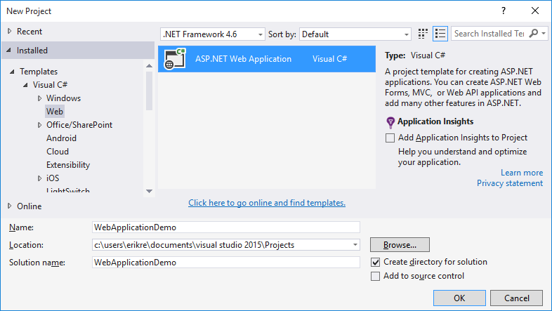
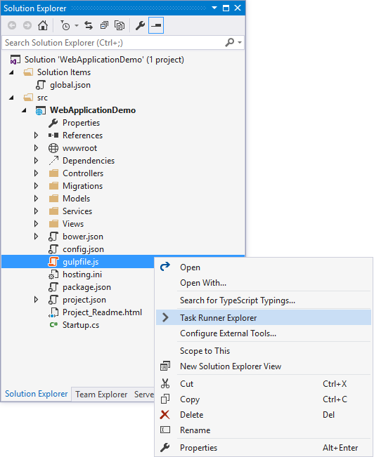
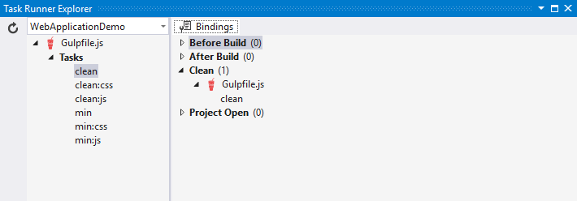
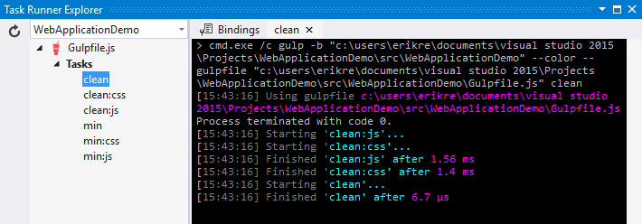
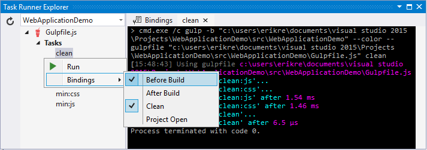
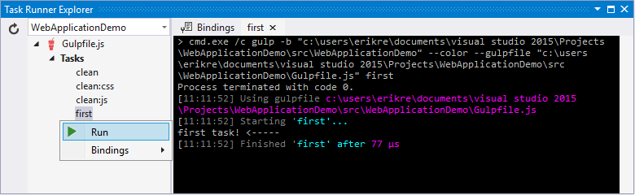
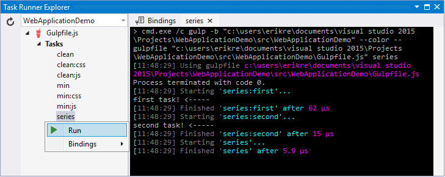
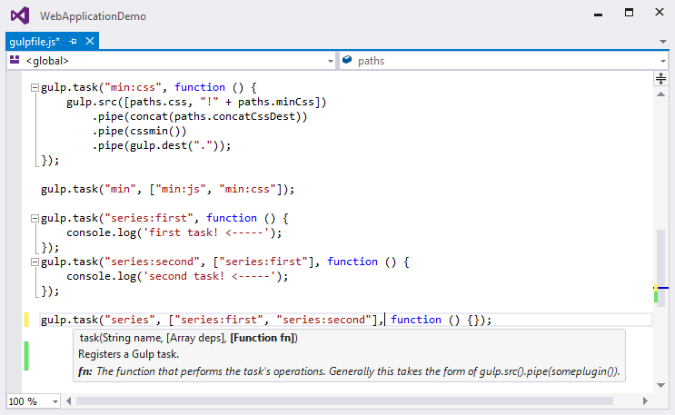

Using Gulp¶
By Erik Reitan, Scott Addie and Daniel Roth
In a typical modern web application, the build process might:
- Bundle and minify JavaScript and CSS files.
- Run tools to call the bundling and minification tasks before each build.
- Compile LESS or SASS files to CSS.
- Compile CoffeeScript or TypeScript files to JavaScript.
A task runner is a tool which automates these routine development tasks and more. Visual Studio provides built-in support for two popular JavaScript-based task runners: Gulp and Grunt.
Sections:
Introducing Gulp¶
Gulp is a JavaScript-based streaming build toolkit for client-side code. It is commonly used to stream client-side files through a series of processes when a specific event is triggered in a build environment. Some advantages of using Gulp include the automation of common development tasks, the simplification of repetitive tasks, and a decrease in overall development time. For instance, Gulp can be used to automate bundling and minification or the cleansing of a development environment before a new build.
The ASP.NET Core Web Application project template is used to help you get started designing and coding a new Web application in Visual Studio. It contains default functionality to demonstrate many aspects of ASP.NET. The template also includes Node Package Manager (npm) and Gulp, making it easier to add bundling and minification to a project.
Note
You don’t need the ASP.NET Core Web Application project template or Visual Studio to implement bundling and minification. For example, create an ASP.NET project using Yeoman, push it to GitHub, clone it on a Mac, and then bundle and minify the project.
When you create a new web project using ASP.NET Core Web Application template, Visual Studio includes the Gulp.js npm package, the gulpfile.js file, and a set of Gulp dependencies. The npm package contains all the prerequisites for running Gulp tasks in your Visual Studio project. The provided gulpfile.js file defines a set of Gulp tasks which can be run from the Task Runner Explorer window in Visual Studio. The devDependencies section of the package.json file specifies the development-time dependencies to install. These dependencies are not deployed with the application. You can add new packages to devDependencies and save the file:
{
"name": "ASP.NET",
"version": "0.0.0",
"devDependencies": {
"gulp": "3.8.11",
"gulp-concat": "2.5.2",
"gulp-cssmin": "0.1.7",
"gulp-uglify": "1.2.0",
"rimraf": "2.2.8"
}
}
After adding a new key-value pair in devDependencies and saving the file, Visual Studio will download and install the corresponding version of the package. In Solution Explorer, these packages are found in Dependencies > npm.
Gulp Starter Tasks in Visual Studio¶
A starter set of Gulp tasks is defined in gulpfile.js. These tasks delete and minify the CSS and JavaScript files. The following JavaScript, from the first half of gulpfile.js, includes Gulp modules and specifies file paths to be referenced within the forthcoming tasks:
/// <binding Clean='clean' />
"use strict";
var gulp = require("gulp"),
rimraf = require("rimraf"),
concat = require("gulp-concat"),
cssmin = require("gulp-cssmin"),
uglify = require("gulp-uglify");
var paths = {
webroot: "./wwwroot/"
};
paths.js = paths.webroot + "js/**/*.js";
paths.minJs = paths.webroot + "js/**/*.min.js";
paths.css = paths.webroot + "css/**/*.css";
paths.minCss = paths.webroot + "css/**/*.min.css";
paths.concatJsDest = paths.webroot + "js/site.min.js";
paths.concatCssDest = paths.webroot + "css/site.min.css";
The above code specifies which Node modules are required. The require function imports each module so that the dependent tasks can utilize their features. Each of the imported modules is assigned to a variable. The modules can be located either by name or path. In this example, the modules named gulp, rimraf, gulp-concat, gulp-cssmin, and gulp-uglify are retrieved by name. Additionally, a series of paths are created so that the locations of CSS and JavaScript files can be reused and referenced within the tasks. The following table provides descriptions of the modules included in gulpfile.js.
| Module Name | Description |
|---|---|
| gulp | The Gulp streaming build system. For more information, see gulp. |
| rimraf | A Node deletion module. For more information, see rimraf. |
| gulp-concat | A module that will concatenate files based on the operating system’s newline character. For more information, see gulp-concat. |
| gulp-cssmin | A module that will minify CSS files. For more information, see gulp-cssmin. |
| gulp-uglify | A module that minifies .js files using the UglifyJS toolkit. For more information, see gulp-uglify. |
Once the requisite modules are imported in gulpfile.js, the tasks can be specified. Visual Studio registers six tasks, represented by the following code in gulpfile.js:
gulp.task("clean:js", function (cb) {
rimraf(paths.concatJsDest, cb);
});
gulp.task("clean:css", function (cb) {
rimraf(paths.concatCssDest, cb);
});
gulp.task("clean", ["clean:js", "clean:css"]);
gulp.task("min:js", function () {
return gulp.src([paths.js, "!" + paths.minJs], { base: "." })
.pipe(concat(paths.concatJsDest))
.pipe(uglify())
.pipe(gulp.dest("."));
});
gulp.task("min:css", function () {
return gulp.src([paths.css, "!" + paths.minCss])
.pipe(concat(paths.concatCssDest))
.pipe(cssmin())
.pipe(gulp.dest("."));
});
gulp.task("min", ["min:js", "min:css"]);
The following table provides an explanation of the tasks specified in the code above:
| Task Name | Description |
|---|---|
| clean:js | A task that uses the rimraf Node deletion module to remove the minified version of the site.js file. |
| clean:css | A task that uses the rimraf Node deletion module to remove the minified version of the site.css file. |
| clean | A task that calls the clean:js task, followed by the clean:css task. |
| min:js | A task that minifies and concatenates all .js files within the js folder. The .min.js files are excluded. |
| min:css | A task that minifies and concatenates all .css files within the css folder. The .min.css files are excluded. |
| min | A task that calls the min:js task, followed by the min:css task. |
Running Default Tasks¶
If you haven’t already created a new Web app, create a new ASP.NET Web Application project in Visual Studio.
- Select File > New > Project from the menu bar. The New Project dialog box is displayed.

- Select the ASP.NET Web Application template, choose a project name, and click OK.
- In the New ASP.NET Project dialog box, select the ASP.NET Core Web Application template and click OK.
- In Solution Explorer, right-click gulpfile.js, and select Task Runner Explorer.
Task Runner Explorer shows the list of Gulp tasks. In the default ASP.NET Core Web Application template in Visual Studio, there are six tasks included from gulpfile.js.

- Underneath Tasks in Task Runner Explorer, right-click clean, and select Run from the pop-up menu.

Task Runner Explorer will create a new tab named clean and execute the related clean task as it is defined in gulpfile.js.
- Next, right-click the clean task, then select Bindings > Before Build.
The Before Build binding option allows the clean task to run automatically before each build of the project.
It’s worth noting that the bindings you set up with Task Runner Explorer are not stored in the project.json. Rather they are stored in the form of a comment at the top of your gulpfile.js. It is possible (as demonstrated in the default project templates) to have gulp tasks kicked off by the scripts section of your project.json. Task Runner Explorer is a way you can configure tasks to run using Visual Studio. If you are using a different editor (for example, Visual Studio Code) then using the project.json will probably be the most straightforward way to bring together the various stages (prebuild, build, etc.) and the running of gulp tasks.
Note
project.json stages are not triggered when building in Visual Studio by default. If you want to ensure that they are set this option in the Visual Studio project properties: Build tab -> Produce outputs on build. This will add a ProduceOutputsOnBuild element to your .xproj file which will cause Visual studio to trigger the project.json stages when building.
Defining and Running a New Task¶
To define a new Gulp task, modify gulpfile.js.
- Add the following JavaScript to the end of gulpfile.js:
gulp.task("first", function () {
console.log('first task! <-----');
});
This task is named first, and it simply displays a string.
- Save gulpfile.js.
- In Solution Explorer, right-click gulpfile.js, and select Task Runner Explorer.
- In Task Runner Explorer, right-click first, and select Run.
You’ll see that the output text is displayed. If you are interested in examples based on a common scenario, see Gulp Recipes.
Defining and Running Tasks in a Series¶
When you run multiple tasks, the tasks run concurrently by default. However, if you need to run tasks in a specific order, you must specify when each task is complete, as well as which tasks depend on the completion of another task.
- To define a series of tasks to run in order, replace the
firsttask that you added above in gulpfile.js with the following:
gulp.task("series:first", function () {
console.log('first task! <-----');
});
gulp.task("series:second", ["series:first"], function () {
console.log('second task! <-----');
});
gulp.task("series", ["series:first", "series:second"], function () {});
You now have three tasks: series:first, series:second, and series. The series:second task includes a second parameter which specifies an array of tasks to be run and completed before the series:second task will run. As specified in the code above, only the series:first task must be completed before the series:second task will run.
- Save gulpfile.js.
- In Solution Explorer, right-click gulpfile.js and select Task Runner Explorer if it isn’t already open.
- In Task Runner Explorer, right-click series and select Run.

IntelliSense¶
IntelliSense provides code completion, parameter descriptions, and other features to boost productivity and to decrease errors. Gulp tasks are written in JavaScript; therefore, IntelliSense can provide assistance while developing. As you work with JavaScript, IntelliSense lists the objects, functions, properties, and parameters that are available based on your current context. Select a coding option from the pop-up list provided by IntelliSense to complete the code.
For more information about IntelliSense, see JavaScript IntelliSense.
Development, Staging, and Production Environments¶
When Gulp is used to optimize client-side files for staging and production, the processed files are saved to a local staging and production location. The _Layout.cshtml file uses the environment tag helper to provide two different versions of CSS files. One version of CSS files is for development and the other version is optimized for both staging and production. In Visual Studio 2015, when you change the Hosting:Environment environment variable to Production, Visual Studio will build the Web app and link to the minimized CSS files. The following markup shows the environment tag helpers containing link tags to the Development CSS files and the minified Staging, Production CSS files.
<environment names="Development">
<link rel="stylesheet" href="~/lib/bootstrap/dist/css/bootstrap.css" />
<link rel="stylesheet" href="~/css/site.css" />
</environment>
<environment names="Staging,Production">
<link rel="stylesheet" href="https://ajax.aspnetcdn.com/ajax/bootstrap/3.3.5/css/bootstrap.min.css"
asp-fallback-href="~/lib/bootstrap/dist/css/bootstrap.min.css"
asp-fallback-test-class="sr-only" asp-fallback-test-property="position" asp-fallback-test-value="absolute" />
<link rel="stylesheet" href="~/css/site.min.css" asp-append-version="true" />
</environment>
Switching Between Environments¶
To switch between compiling for different environments, modify the Hosting:Environment environment variable’s value.
- In Task Runner Explorer, verify that the min task has been set to run Before Build.
- In Solution Explorer, right-click the project name and select Properties.
The property sheet for the Web app is displayed.
- Click the Debug tab.
- Set the value of the Hosting:Environment environment variable to
Production. - Press F5 to run the application in a browser.
- In the browser window, right-click the page and select View Source to view the HTML for the page.
Notice that the stylesheet links point to the minified CSS files.
- Close the browser to stop the Web app.
- In Visual Studio, return to the property sheet for the Web app and change the Hosting:Environment environment variable back to
Development. - Press F5 to run the application in a browser again.
- In the browser window, right-click the page and select View Source to see the HTML for the page.
Notice that the stylesheet links point to the unminified versions of the CSS files.
For more information related to environments in ASP.NET Core, see Working with Multiple Environments.
Task and Module Details¶
A Gulp task is registered with a function name. You can specify dependencies if other tasks must run before the current task. Additional functions allow you to run and watch the Gulp tasks, as well as set the source (src) and destination (dest) of the files being modified. The following are the primary Gulp API functions:
| Gulp Function | Syntax | Description |
|---|---|---|
| task | gulp.task(name[, deps], fn) { } |
The task function creates a task. The name parameter defines the name of the task. The deps parameter contains an array of tasks to be completed before this task runs. The fn parameter represents a callback function which performs the operations of the task. |
| watch | gulp.watch(glob [, opts], tasks) { } |
The watch function monitors files and runs tasks when a file change occurs. The glob parameter is a string or array that determines which files to watch. The opts parameter provides additional file watching options. |
| src | gulp.src(globs[, options]) { } |
The src function provides files that match the glob value(s). The glob parameter is a string or array that determines which files to read. The options parameter provides additional file options. |
| dest | gulp.dest(path[, options]) { } |
The dest function defines a location to which files can be written. The path parameter is a string or function that determines the destination folder. The options parameter is an object that specifies output folder options. |
For additional Gulp API reference information, see Gulp Docs API.
Gulp Recipes¶
The Gulp community provides Gulp recipes. These recipes consist of Gulp tasks to address common scenarios.
Summary¶
Gulp is a JavaScript-based streaming build toolkit that can be used for bundling and minification. Visual Studio automatically installs Gulp along with a set of Gulp plugins. Gulp is maintained on GitHub. For additional information about Gulp, see the Gulp Documentation on GitHub.